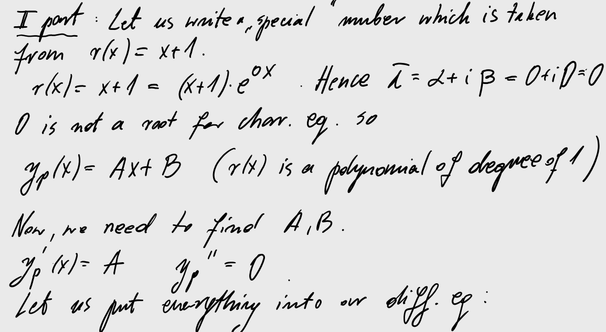
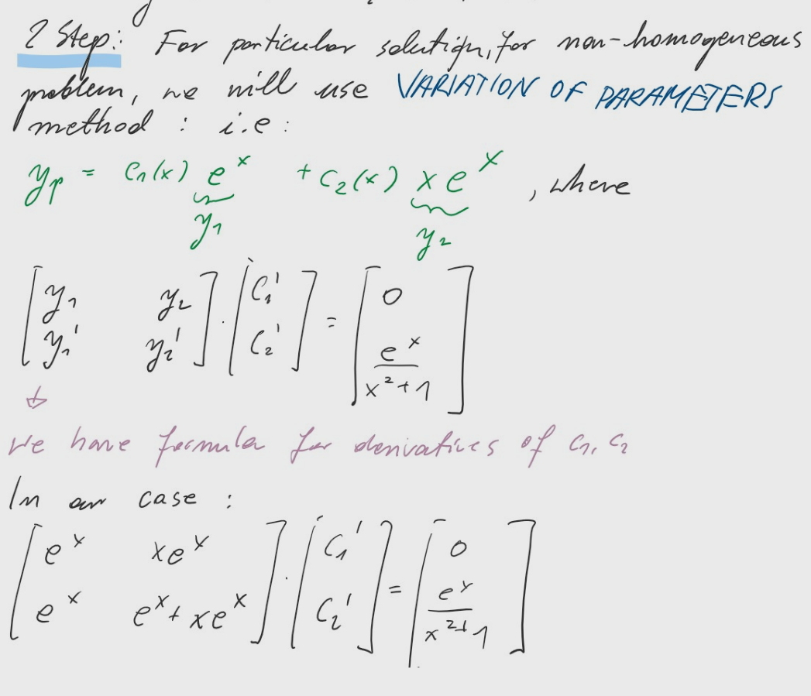

rules: : see prof. Fryszkowski instructions.
There will be one test during the last lecture.
If you get 70% or more then you don't need to write an exam.
There will be two exam terms during the summer session.
All of you can write an exam.
Literature: [1].
Prof. Fryszkowski Leture notes from Microsoft Teams:
Advanced Engineering Mathematics International Student Edition By Peter V. O’Neil
[2]. Online course: https://versal.com/learn/aoz8qv/lessons/1.
[3]. Ordinary Differential equations, Gabriel Nagy, Mathematics Departmen, Michigan State University, lecture notes.
Topics: First order diff. eq. : (separable, homogeneous, linear: integrating factor, variation of parameter), orthogonal trajectories. Second order diff. eq. : constant coefficient case: method of undetermined coefficients, variation of parameters, Euler sec. order. diff. eq., n-th order diff. eq. Systems of diff. eq.: For such problems you can use the method of reduction or matrices method (using eigenvalues and eigenvectors) Laplace transform: We will solve the above problems using Laplace transform. Difference equations: First and second order of difference equations. ( Note: Only the first order will appear during the test).
An Example of #I TEST:
Dear students, if you want to examine your knowledge you can send me pictures of your solutions.
I will uploud solutions in some time.
Solve the following problems by finding function $y$.
1. $xy'=y\left(\ln \frac{y}{x}+1\right), y(1)=e.$
2. $xy'-y^2\ln x+y=0, y(e)=1.$
3. $(x^2+xy)y'+(3xy+y^2)=0.$
4. $y'=\frac{x^2+3y^2}{2xy}.$
5. $xy'+y=x\sqrt{x},\ \ y(1)=2.$
An Example of #II TEST:
Some modifications has been made to simplify calculations.
The Laplace Transform is a transformation, it changes function into a new function. It is linear transformation it converts linear combination into a linear combination.
What is interesting is the fact that Laplace Transform converts derivatives into multiplication. The idea is to solve algebraic equation instead of differential equation.
The following picture presenting the idea of Laplace Transform:
Here (CLICK) you can find the Laplace table taken from prof. Fryszkowski webpage.
Example. Let us calculate Laplace Transform of $te^{at},$ where $a\in\mathbb{R}.$
#13 Systems of diff. eq. - nonhomogeneous case $\vec{Y'}=AY +R(x)$
For systems of differential equations with a nonzero right-hand side we have at least three methods of solving.
Our main problem is to find vector function $\vec{y}$ satisfying
$\vec{y'}=Ay +R(x)$
I Method:
Suppose that $M(x)$ is a fundamental matrix solution i.e.
$M(x)$ satisfies $M'(x)=A M(x)$
$M(x)$ is an invertible matrix for every $x$, i.e. the $n$ columns of $M(x)$ are linearly independent,
then the general solution of nonhomogeneous system is given by
For solving the above problem using the first method it is enough to plug everything into the direct formula for solution i.e. eq. $\color{blue} (*)$.
Let us find eigenvalues and eigenvectors.
In the complex case it is enough to take only one eigenvector and then split complex function into the real and imaginary part.
Let me explain this method using an example. The idea is similar to the formula used in the first method. But now you can see the connection between the method of variation of parameters for second order diff. eq.
Example.
Solve the following systems of differential equations:
1. $\begin{cases} y_1'(x) = y_1 + y_2-\cos x, \\
y_2'(x) = -2y_1-y_2 +\sin x + \cos x.
\end{cases}$
Example.
Solve the following systems of differential equations:
1. $\begin{cases} y_1'(x) = y_2 + x, \\
y_2'(x) = -y_1 + x.
\end{cases}$
Now, its enough to calculate two antiderivatives:
Answer: $y(x)=c_1 \begin{bmatrix} \cos x \\ \sin x \end{bmatrix} + c_2 \begin{bmatrix} -\sin x \\ \cos x \end{bmatrix}+ y_p(x), $ where $y_p(x)= c_1(x) \begin{bmatrix} \cos x \\ \sin x \end{bmatrix} + c_2(x) \begin{bmatrix} -\sin x \\ \cos x \end{bmatrix} $ ($c_1(x), c_2(x)$ are calculated in the above wolframcloud iframe)
#12 Systems of differential equations $\vec{Y'}=AY $
Before we start with presenting methods of solving such problems let me give you some examples of applications (in random order). Sport: "How to construct mathematical model of sport training", Igor Ryguła, Physics: see chapter "Systems with More Than One Degree of Freedom" from the book: "Theory of Vibration: An Introduction" by Shabana A., Home heating: Click HERE , Economics: Price and Inventory Dynamics Click HERE ,
How to solve such (real) problems?
In the first step we will present the method of solving systems of differential equations i.e.
using the method of elimination. In short, we will transform system of differential equations into differential equation of $n$-th order.
Example. Solve the following system of diff. equations :
$x_1'=-x_1 + 3x_2,$
$x_2'=x_1-x_2$.
Solution: Let us use the second equation to calculate $x_1$,
$x_1=x_2' + x_2$ and hence, $x_1'=x_2''+x_2'$.
Plugging into the first equation we are getting:
$x_2''+x_2'=-x_2'-x_2+3x_2$.
As we can see we have the second order diff. eq. i.e.
$x_2''+2x_2-2x_2=0.$
Since you already know how to solve such problems let me give you the link to wolframcloud:
Example.
Transform the following second order diff. eq. into system of diff. eq.:
$y''+2y'+2y=sin(3x)$.
Let us put $x_1=y$, $x_2= y'$. We obtain,
$x_1'=x_2,$
$x_2'=-2x_1 - 2x_2.$
Now, we will solve some homogeneous problems using the idea of eigenvalues and eigenvectors. If, you didn't have this topic during the course of linear Algebra you can find some informations, HERE. Example. Solve the system of diff. eq. $\vec{y}'=A \vec{y}$, where
a) $A=\begin{bmatrix} 1 & 12 \\ 3 & 1 \end{bmatrix}$
b) $A=\begin{bmatrix} 1 & 0 & 0 \\ 0 & 1 & -1\\ 0 & 1 & 1 \end{bmatrix}.$ Solution. a) Characteristic eq. is as follows, $w_A(\lambda)= det(A-\lambda I )=0$, where $I$ is an identity map.
In our case:
$ (1-\lambda)^2-36=0.$
By solving characteristic eq. we are getting two distinct real roots: $\lambda_1 = -5, \lambda_2=7.$
Now, we are looking for eigenvalues.
For $\lambda_1=-5 $ we are getting
$(A-\lambda_1 I) \vec{v} = 0$ (From the definition of eigenvalues such systems have infinitely many solutions).
b)
Recall that $\color{green} e^{ix}=\cos x + i \sin x.$
The defective case:
The last case is when we have double roots for characteristic equation.
If the eigenvalue $\lambda$ is a double root of the characteristic equation, and $v_1$ is a nonzero eigenvector for $\lambda$, then the eigenvalue is said to be defective.
For the second independent solution we will use the formula:
$y_2(x)= e^{\lambda_1 x} (x v_1 + v_2),$ where $v_2 $ is a vector satisfying:
$(A-\lambda_1 I) v_2 = v_1. $ Example. Find the solution for $\vec{y}'=A \vec{y}$, where $A=\begin{bmatrix} 0 & 1 \\ -9 & 6 \end{bmatrix}$ Solution:
#11 Euler Equations
We will deal with the following differential equation:
$ax^2y''+bxy'+cy=0$
We will consider the case, when $x>0$.
From the lecture (05-05) we know that all solutions are of the form:
$\color{green} x=e^t.$
Plugging the above substitution into our Euler eq. we are getting algebraic equation:
In the following picture you can see the idea of getting second order diff. eq. with constant coefficients:
As you know for second order differential eq. with constant coefficients we have 3 cases i.e. two distinct roots, one double root and complex case (see the last video on #6 tutorials).
Example.
Solve the following equation: $2x^2y'' + 3xy'-15y=0.$
Example.
Solve the following equation: $x^3y'''-x^2y''-2xy'+6y=0.$
Another idea of solving Euler Eq. is to plug $\color{green} y(x)=x^r, x>0.$ You can find some examples here (click me).
#10 discussion of the tests
solutions of 2 tests will appear here. (Im still waitng for your solutions:))
Solutions: 1. problem
#9 linear differential, undetermined coefficients method
One more time we are dealing with the second order differential equation with constant coefficients i.e.
$y''+a_1 y'+ a_2 y=r(x)\ \ {\color{green}(*) }$
In this section we are focusing on the Undetermined Coefficients Method for finding a particular solution.
We will consider the following three cases. To be more fun in each case we have another cases.
1 case: $r(x)= b_k x^k + b_{k-1} x^{k-1}+ \ldots b_1 x + b_0.$
Let us assume that $p(\lambda)$ is a characteristic equation of eq. ${\color{green}(*) }$.
1 case.
If $0$ is a root of characteristic eq. i.e. $p(0)=0,$ then
$y_p(x)= c_k x^k + c_{k-1} x^{k-1}+ \ldots c_1 x + c_0.$
It means that particular solution of eq. ${\color{green}(*) }$ is of the same form as $ r(x).$ We just need to find coefficients $c_i$ for $i=0,1,\ldots, k$.
2 case.
If $0$ is a single root of characteristic eq. i.e. $p(0)=0,$ then
$y_p(x)= {\color{green} x} (c_k x^k + c_{k-1} x^{k-1}+ \ldots c_1 x + c_0).$
3 case.
If $0$ is a double root of characteristic eq. i.e. $p(0)=0,$ then
$y_p(x)= {\color{green} x^2} (c_k x^k + c_{k-1} x^{k-1}+ \ldots c_1 x + c_0).$
2 case: $r(x)= (b_k x^k + b_{k-1} x^{k-1}+ \ldots b_1 x + b_0) {\color{green} e^{\alpha x}}.$
Let us assume that $p(\lambda)$ is a characteristic equation of eq. ${\color{green}(*) }$.
1 case.
If ${\color{green} \alpha }$ is a root of characteristic eq. i.e. $p(\alpha)=0,$ then
$y_p(x)= (c_k x^k + c_{k-1} x^{k-1}+ \ldots c_1 x + c_0 )e^{\alpha x}.$
It means that particular solution of eq. ${\color{green}(*) }$ is of the same form as $ r(x).$ We just need to find coefficients $c_i$ for $i=0,1,\ldots, k$.
2 case.
If ${\color{green} \alpha }$ is a single root of characteristic eq. then
$y_p(x)= {\color{green} x} (c_k x^k + c_{k-1} x^{k-1}+ \ldots c_1 x + c_0) e^{\alpha x}.$
3 case.
If ${\color{green} \alpha }$ is a double root of characteristic then
$y_p(x)= {\color{green} x^2} (c_k x^k + c_{k-1} x^{k-1}+ \ldots c_1 x + c_0)e^{\alpha x}.$
3 case: $r(x)= (A \cos \beta x + B \sin \beta x) e^{\alpha x}$
Let us assume that $\alpha + i \beta$ is a root of characteristic equation of eq. ${\color{green}(*) }$ (in this particular case characteristic equation has two distinct complex roots, $\Delta < 0$ for $p(\lambda)=0$).
1 case.
If ${\color{green} \alpha + i \beta }$ ${\color{green} is not}$ a root of characteristic eq. i.e. $p(\alpha + i\beta)\neq 0,$ then
$y_p(x)= (c_k x^k + c_{k-1} x^{k-1}+ \ldots c_1 x + c_0 )e^{\alpha x}.$
2 case.
If ${\color{green} \alpha + i \beta }$ ${\color{green} is}$ a root of characteristic eq. i.e. $p(\alpha + i\beta)= 0,$ then
$y_p(x)= (c_k x^k + c_{k-1} x^{k-1}+ \ldots c_1 x + c_0 )e^{\alpha x}.$ Note: We can use the method of undetermined coefficients for
$r(x)=[w(x) \sin (\cos (\beta x) ) + v(x) \sin (\beta x)] e^{\alpha x }$, where $v$ and $w$ are polynomials.
Now we are ready for some examples. Example. Solve $y''+y=x+1$.
As previous we are starting with hom. diff. equation.
For the second part we will use the method of undetermined coefficients. As you observed the form of particular solution depends on the "special" number taken from $r(x)=[w(x) \sin (\cos \beta x ) + v(x) \sin( \beta x)] e^{\alpha x }$. Let us denote this number as $\bar{\lambda}:= \alpha+ i\beta.$
If $\bar{\lambda}$ is not a root of characteristic equation, then particular solution has the same form as $r(x)$. If $\bar{\lambda}$ is a root of characteristic equation, then we need to multiply particular solution by $x^m$, where $m$ a multiplicity of $\lambda.$

Now, we can put everything into our diff. eq.
Example. Solve $y''-3y-4y=3e^{4x}$.
By finding constant $A$ we are getting our solution:
#8 linear differential equation non-homogeneous case $y''+a_1(x) y'+ a_2 (x) y=r(x), r(x) \neq 0.$
We are dealing with the following problem:
Find $y$ such that
$y''+a_1 y'+ a_2 y=r(x), a_1, a_2 \in \mathbb{R}.$
In this section we will deal with the case when, $r(x)\neq 0. $
Let us recall that we know the solution for homogeneous case i.e.
$y_0(x)= c_1 y_1 (x) + y_2 (x) c_2$, where $y_1, y_2$ are fundamental solutions of homogeneous eq. $y''+a_1 y'+ a_2 =0$
Non-homogeneous case.
Let us denote $L(y)=y''+a_1(x) y'+ a_2 (x) y.$
Let us also assume that $y_1$, $y_1$ are fundamental solutions of the equation $L(y)=0$.
For finding general solution of non-homogeneous diff. eq. i.e.
$L(y)=r(x)$
we will use the formula:
$y(x)=y_p(x)+y_0(x)$,
where $y_p$ is a particular solution of $L(y)=r(x)$ and $y_0$ is a general solution of homogeneous diff. eq. $L(y)=0.$
Hence, we already know how to solve homogeneous part, it is enough to learn how to find particular solutions. We will work with two methods. The first one is the method of variational parameters, the second is the method of undetermined coefficients.
Variational of parameters method
Our main problem is to find particular solution of
$y''+a_1(x) y'+ a_2 (x) y=r(x).$
Note: If $y_1, y_2$ are fundamental solutions ($L(y_1)=0, L(y_2)=0$ and $y_1, y_2$ are lineary independent), then
$ y_p(x)=c_1(x) y_1(x)+ c_2(x) y_2(x)$,
where $c_1, c_2$ are functions satysfying
$ \begin{bmatrix} y_1 & y_2 \\ y_1' & y_2' \end{bmatrix} \left[ \begin{array}{c} c_1' \\ c_2' \end{array} \right]=\left[ \begin{array}{c} 0 \\ r(x) \end{array} \right] $
Here, you can see the proof of the above fact (sorry for denoting argument as $t$ not $x$.)
Example. Solve $y''-2y'+y= \frac{e^x}{x^2+1}.$
Solution:
In the first step we will solve the homogeneous part:
In the second part we will use variation of parameters method for finding a particular solution.

We can solve such system using Cramer's rule:
Example (Homework):
Solve: $xy''-(x+1)y'+y=x^2$ for given fundamental solutions $y_1(x)=e^x, y_2(x)=x+1.$
What to remember: How to variation of parameters method works.
#7 linear differential equation, $y''+a_1(x) y'+ a_2 (x) y=r(x).$
For n-th order linear differential equation with constant coefficients we will use the same idea as previous. We will plug function $y(x)=e^{\lambda x}$ into diff. eq. :
and then, using roots of characteristic eq., we will generate n lineary independent solutions.
Example.
Solve the differential equations:
$y^{(3)}-2y''+2y'=0.$
$y^{(3)}-2y''+y'=0.$
#6 Second order linear differential equation. $y''+a_1(x) y'+ a_2 (x) y=0.$
For notation see prof. Fryszkowski lecture notes.
Introduction:
Example.Show that $y_1(x)=\sin x$, $y_2 (x) =2 \sin x$ are lineary dependent.
Example. Show that $y_1(x)=\sin x$, $y_2 (x) =x \sin x$ are lineary independent.
Homogeneous case.
Let us denote $L(y)=y''+a_1(x) y'+ a_2 (x) y. $
Let us recall that $y_1$, $y_1$ are fundamental solutions of the equation $L(y)=0$ iff $y_1, y_2$ are lineary independent and $L(y_1)=0, L(y_2)=0.$
Example. Show that $y_1(x)=e^x, y_2(x) = e^{-2x}$ are fundamental solutions to the equation $y''+y'-2y=0.$
Example. Find the Wronskian of the functions:
1. $y_1(x)= \sin x, y_2(x) = 2\sin x. $
2. $y_1(x)= \sin x, y_2(x) = x\sin x. $
Example. Solve the differential equations:
$y''-3y'+2y=0,$
$y''-2y'+2y=0$,
$y''-2y'+y=0$,
What to remember: How to solve homogeneous linear diff. eq. with constant coefficients.
#5 Semi-exact diff. equation, n-th order diff. eq.
Semi-exact Eq. Solved example:
Example Solve: $(x^2+xy)y'+3xy+y^2 =0$ (We can rewrite eq. as $(3xy+y^2) dx(x^2+xy)dy =0$).
The differential equation of the \(n\)-th order in the general case has the form:
\[{F\left( {x,y,y’,y^{\prime\prime}, \ldots ,{y^{\left( n \right)}}} \right) }={ 0,}\]
Below we will consider two cases (for more see here.)
If our differential equation is independent of $y$, then by
then by replacing
\[{y^{\left( k \right)}} = p\left( x \right)\]
the order of this equation is reduced by \(k\) units. As a result, the original equation takes the form
Example. $y''=f(x,y')$ (right hand side is independent of $y$). Solve the equation \(y^{\prime\prime} = \sin x + \cos x.\)
Solution:
Consider the function \(y’ = p\left( x \right).\) Then \(y^{\prime\prime} = p’.\) Consequently,
\[p’ = \sin x + \cos x.\]
Integrating, we find the function \(p\left( x \right):\)
\[ {\frac{{dp}}{{dx}} = \sin x + \cos x,\;\;}\Rightarrow {dp = \left( {\sin x + \cos x} \right)dx,\;\;}\Rightarrow {{\int {dp} }={ \int {\left( {\sin x + \cos x} \right)dx} ,\;\;}}\Rightarrow {{p = – \cos x }+{ \sin x + {C_1}.}} \]
Given that \(y’ = p,\) we integrate one more equation of the \(1\)st order:
\[ {{y’ = – \cos x }+{ \sin x + {C_1},\;\;}}\Rightarrow {{\int {dy} }={ \int {\left( { – \cos x + \sin x + {C_1}} \right)dx} ,\;\;}}\Rightarrow {{y = – \sin x }-{ \cos x + {C_1}x + {C_2}.}} \]
The latter formula gives the general solution of the original differential equation.
Example. $y''=f(y,y')$(right hand side is independent of $x$).
Now, we will consider the case, when $y''=f(y,y')$. For these types of problems we will use the following substitution:
$y'=q(y).$
Second derivative of function $y$ can be reweritten as $y''=q \frac{dq}{dy}.$
Hence, our second order differential equation is now transformed into the first order diff. eq:
$q \frac{dq}{dy}=f(y,q)$. (We are looking for function $q(y)$).
What to remember: 1. How to solve semi-exact diff. eq. (We have two cases for integrating factor). 2. How to transform eq $F(x,y,y',y'')=0$ into first order diff. eq.
#4 Exact diff. equation.
We are dealing with the following problem.
$M(x,y) dy + N(x,y) dx = 0,$ which can be rewritten as $M(x,y) y' + N(x,y) = 0,$
For solving the above problems we will be using the following theorem from Poincaré.
Th. (Poincaré) click Continuously differentiable functions $M, N$ on $x$, $y$, satisfy
$\partial M_x(x,y) = \partial_y N(x,y)$ iff
there is a twice continuously function $\Phi$, dependding on $ x, y$ such that $\partial_y \Phi(x,y) = M(x,y)$ and $\partial_x \Phi(x,y) = N(x,y).$
Function $\Phi$ is called a potential function .
1. [Example 1.4.3, [3]] Show whether the differential equation $2xy y' + 2x + y^2 =0$ is exact or not.
2. [Example 1.4.6, [3]] Find all solutions $y$ to the differential equation:
$2xyy' + 2x+ y^2=0.$
3. [] Find all solutions $y$ to the differential equation (other examples in the following picture):
$(x+2y)y'+x+y=0.$
#3 Linear diff. equation, integrating factor, Bernoulli differential eq.
1. $y'=x^2y$,
2. $xy'+2y=1$,
3. $(x^2-1)y'=y$,
4. $(x^2+1)y' + y^2 + 1= 0$,
5. $y^2 y'= 1-2x,$
6. $\sin y \cos x y' =\sin x \cos y.$
2.
Plot vector field for given d.e.
1. $\frac{dx}{dx} =x$
2. $y'=y-\sin x.$
3. Find the general solutions to the following differential equations:
$\frac{dy}{dx} = \frac{y}{x}, \mbox{ and } \frac{dy}{dx} = -\frac{x}{y}.$
Draw the graphs of those solutions and interpret what you see.
4.
Find the family of orthogonal trajectories for given family of curves.
1. $y=ax^2,$
2. $x^2+y^2=c, c\in \mathbb{R}_+,$
For more, see https://en.wikipedia.org/wiki/Orthogonal_trajectory.
Here you can plot some trajectories:
5. Solve the following differential equations.
1. $(x+y)y'+y=0$,
2. $xy'=y+\sqrt{y^2-x^2},$
3. $xy'=y(1+\ln y - \ln x),$
4. $(x^2+2xy) y'=y^2,$
5. $y'=\frac{2y^2-xy}{x^2-xy+y^2}.$
#1 dde, solution of dde, domain, separable equation
1. Verify if the following functions are solutions for given differential equations
$y(x)=\ln x$, $y'=e^{-y}$, $x\in (0, +\infty).$
$y(x)=\frac{1}{1+x^2}$, $y'+2xy^2=0$, $x\in \mathbb{R},$
2.
Find the domain of the following equation: $y(x)=\frac{2}{3x-2}$, $2y'+3y^2=0,$ $y(1)=2.$
3.
Find and ordinary differential equations satisfied by any function of the form $y(x)=4e^{2x}+3.$
Do the same as above for $(i)\ y(x)=x^2+c$, $(ii)\ y(x)=x^2+Cx+D.$
4. Assuming that $xy'(x)-y(x)=x^2$ write the differential equation satisfied by $z(x)=\frac{y(x)}{x}$. Solve that equation for $z(x)$, and deduce what is $y(x)$.
5. Assuming that $x^2y''(x)-2xy'(x)+2y(x)=0$ write the differential equation satisfied by $z(x)=\frac{y(x)}{x}$. Solve that equation for $z(x)$, and deduce what is $y(x)$.
6. Find a solution of the following separable equations:
$(1+e^y)yy'=e^x$,
$\frac{dy}{dt}sint=y\ln y$,
$(e^yy+1)y'=2t,$
$\frac{dy}{dx}-\sin(\frac{x+y}{2})=\sin(\frac{x-y}{2})$
What to remember: separable equations, domain of solution.
 The Laplace Transform is a transformation, it changes function into a new function. It is linear transformation it converts linear combination into a linear combination.
The Laplace Transform is a transformation, it changes function into a new function. It is linear transformation it converts linear combination into a linear combination.